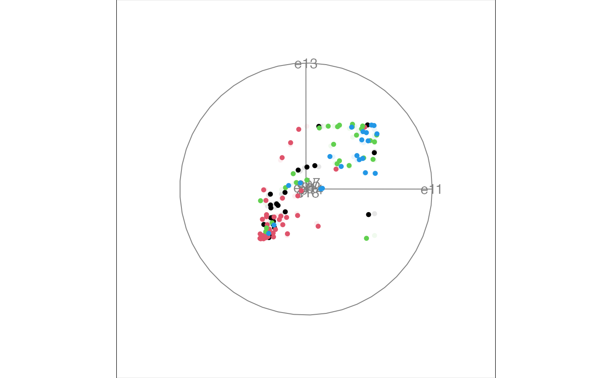

Columns:
A 112 x 11 numeric array
e11 e13 e15 e18 e21 p0 p7 p14 a class1 class2
e11, an ebryonic timepoint from the original data with the number corresponding to the day
e13, an ebryonic timepoint from the original data with the number corresponding to the day
e15, an ebryonic timepoint from the original data with the number corresponding to the day
e18, an ebryonic timepoint from the original data with the number corresponding to the day
e21, an ebryonic timepoint from the original data with the number corresponding to the day
p0, a postnatal timpoint from the original data with the number corresponding to the day
p7, a postnatal timpoint from the original data with the number corresponding to the day
p14, a postnatal timpoint from the original data with the number corresponding to the day
a, a postnatal timpoint from the original data. It is equivalent to p90.
class1, is the high-level class: its range is 1:4
class2, breaks down the high-level classes, so its range is 1:14
Rows: Each case is a gene (or gene family?) And each cell is the gene expression level for that gene at time t, averaging a few measured values and normalizing using the maximum expression value for that gene.
Reference (available on the web at pnas.org): Large-scale temporal gene expression mapping of central nervous system development by X. Wen, S. Fuhrman, G. S. Michaels, D. B. Carr, S. Smith, J. L. Barker, R. Somogyi in the Proceedings of the National Academy of Science, Vol 95, pp. 334-339, January 1998
https://www.pnas.org
head(ratcns)
#> e11 e13 e15 e18 e21 p0 p7 p14 a class1 class2
#> 1 1.00 0.20 0.31 0.24 0.40 0.27 0.19 0.05 0.00 1 1
#> 2 1.00 0.77 0.21 0.37 0.40 0.44 0.68 0.69 0.47 1 1
#> 3 0.49 0.63 1.00 0.54 0.29 0.22 0.10 0.10 0.08 1 1
#> 4 0.02 0.27 0.82 0.87 0.88 0.79 0.76 0.84 1.00 1 1
#> 5 0.36 0.62 0.70 0.81 0.97 0.96 0.78 0.78 1.00 1 1
#> 6 0.06 0.17 0.53 0.96 1.00 0.90 0.51 0.42 0.40 1 1
animate_xy(ratcns[, 1:8], col = ratcns[, 10])
#> Converting input data to the required matrix format.
#> Using half_range 1.7
